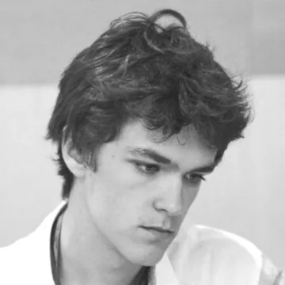
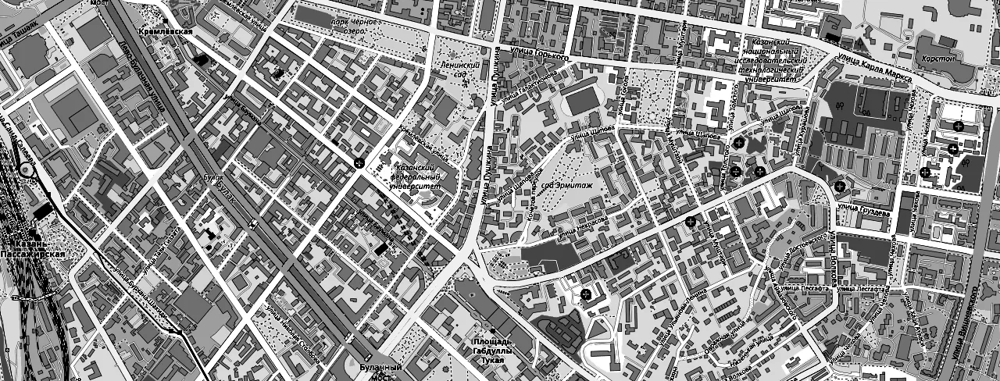
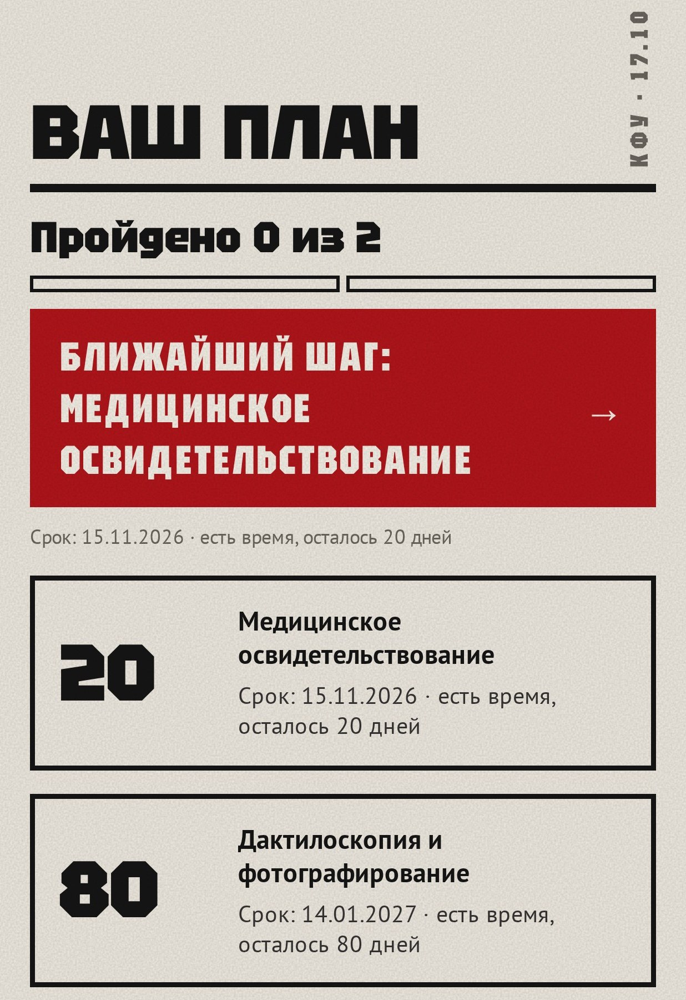
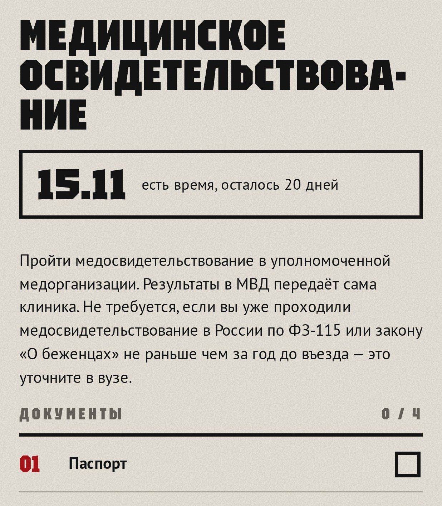
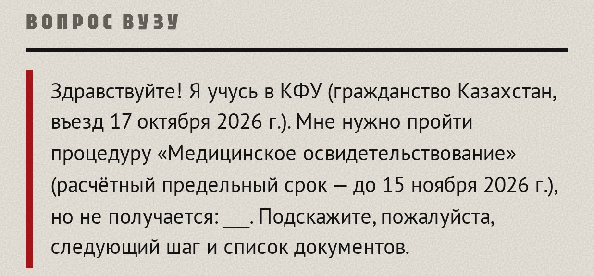
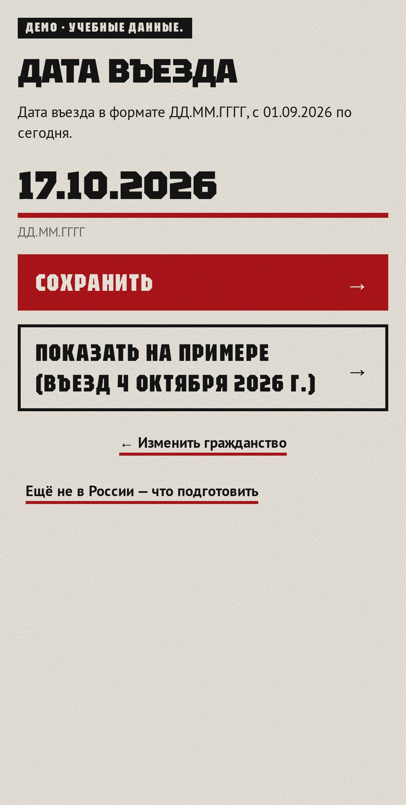
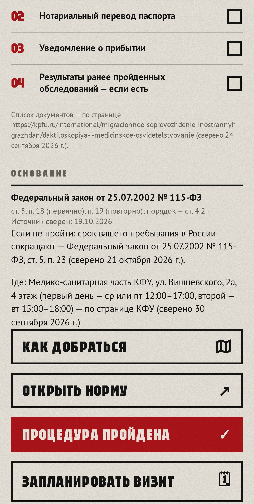
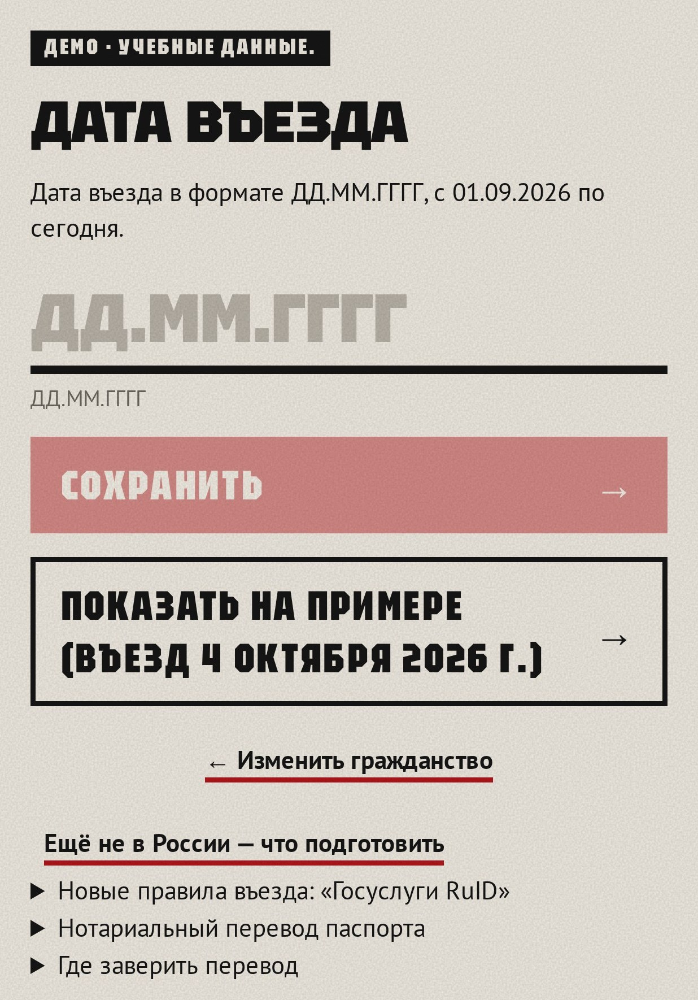
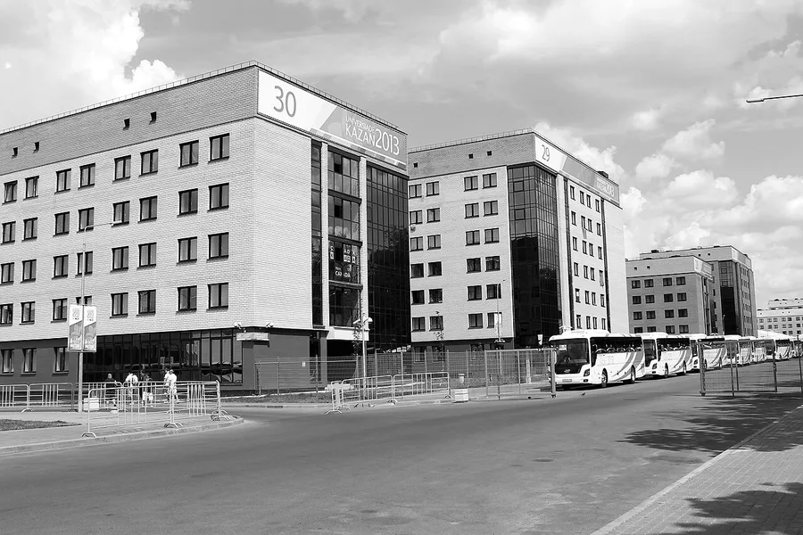
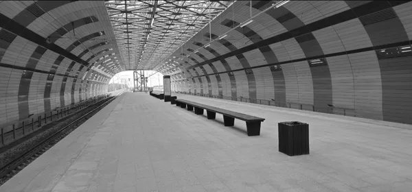

Служебный слайд для технической проверки
Основной сценарий
Личный план иностранного первокурсника в MAX: свои сроки, документы и напоминания
Минобрнауки России × MAX, «Забота о людях». Казань, 29.10.2026
Капитан
Тестирование, проработка функций
Бэкенд, исследование гипотез

Дизайн

© участники OpenStreetMapКакие нужны документы, куда идти и к какому сроку, первокурсник выясняет сам и на чужом языке. У каждого вуза своя памятка. Одного места, которое проведёт по всем шагам с его личными сроками, нет
Закон: 115-ФЗ, ст. 5, в ред. 162-ФЗ; последствие — там же, п. 23
Въезд 17.10
Медосвидетельствование до 15.11
Дактилоскопия до 14.01
Путь от открытия бота до полного плана





Сообщение приходит в чат MAX в 9:00 по Москве. Через год бот опять напомнит о медосвидетельствовании
Кнопка «Ещё не в России» ведёт по шагам до въезда

Отвечаем на отзыв жюри
В продукте
Иностранцы на всех курсах, по таблицам «Сведения» на сайтах вузов
профиль уже в боте профиль разрабатывается
Пилот на одной группе
Профили уже в боте
Вуз ведёт профиль сам
То же ядро, новые нормы

Ноябрь
10–15 сессийпод наблюдением, в общежитии КФУДальше, если
80%доходят до плана без подсказки
0ошибок в датах
−30%времени против памятки
Декабрь
30–50 студентовприехали осенью, впереди дактилоскопия
Набор 2027
Письмо о зачислениисо ссылкой на бота; проверим срок в 30 днейДальше
Второй вузИТМО или СПбГЭУСоберём профиль вуза: адреса, контакты, памятку, языки. От вас нужна лишь одна группа первокурсников
max.ru/t149_hakaton_max_bot
Приложение
Сроки идут от дня въезда каждого студента, а памятка одна на всех
Приложение
Приложение
Приложение